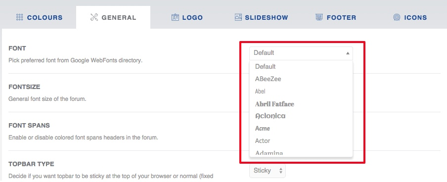

In this section you can configure general forum settings.
In General tab you can specify fonts for whole forum or for menu separately. There are around 1000 fonts available. Font list is brought to you from Google Fonts directory.

You have to be connected to the internet to see the whole font list.